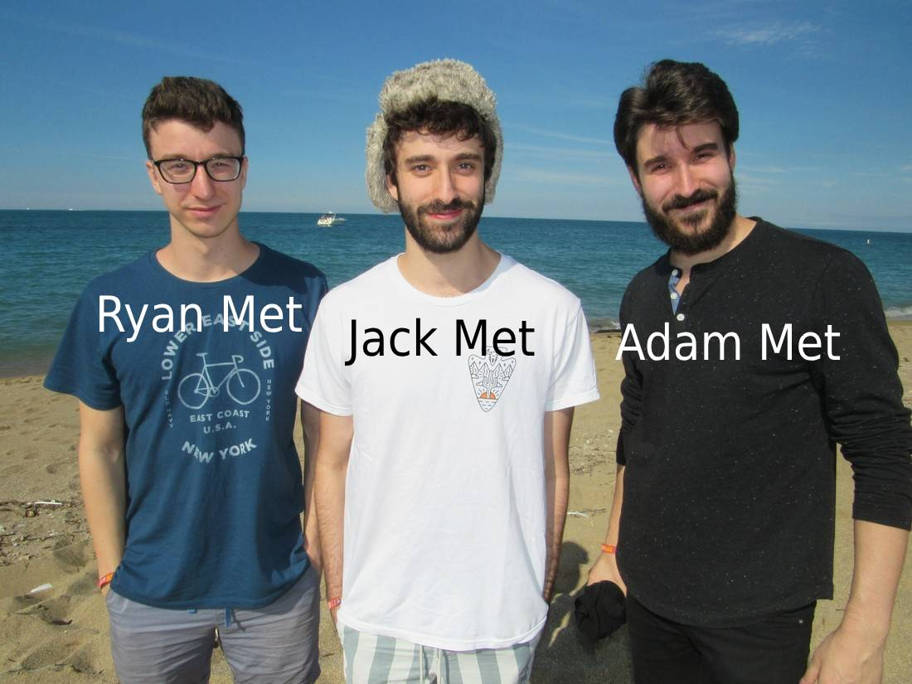

Play the audio

I'm a really big fan of AJR cause they really speak to the sensation of growing up
In a way that a lot of people can't even imagine
Sometimes I feel like
Jack Met and Ryan Met and Adam Met
Jack Met and Ryan Met and Adam Met
Who do you think's the hottest one?
I don't know it's really for you to decide
But I personally think that like
I think Jack Met's the hot one because he's just kinda the main guy
[Ryan] Met's the one with the glasses I think he's a fucking nerd
So unless that's what you're into I don't know if that's the vibe
But he does produce all the music[1] so I think that's a plus
Like I think he's the brains behind the operation
But he doesn't have like a cute hat or anything cause
Jack Met has a cute hat[2], and then
Adam Met I don't know what the fuck he does
Like he's just kinda
I think he's the Kevin Jonas of AJR if you will
See, he had a beard before Jack Met had a beard[3]
Ryan Met still doesn't have a beard cause he's a fuckin nerd and he has glasses
See, like that was his original trait, he had the beard but now that [Jack] Met also has the beard it's
like
How does he even identify himself, that's the conceptual issue at this point
I think you see what the issue is here, there just isn't really a defining trait for him
I'm not even sure what instrument he plays, he probably plays fucking bass[4] or something, cause
it's just
like,
what's the point of that
But yeah, to answer your question, I think [Jack] Met is the hottest AJR brother
Because
- He does things
- He has the hat
- He doesn't have glasses, so I think he's really winning there